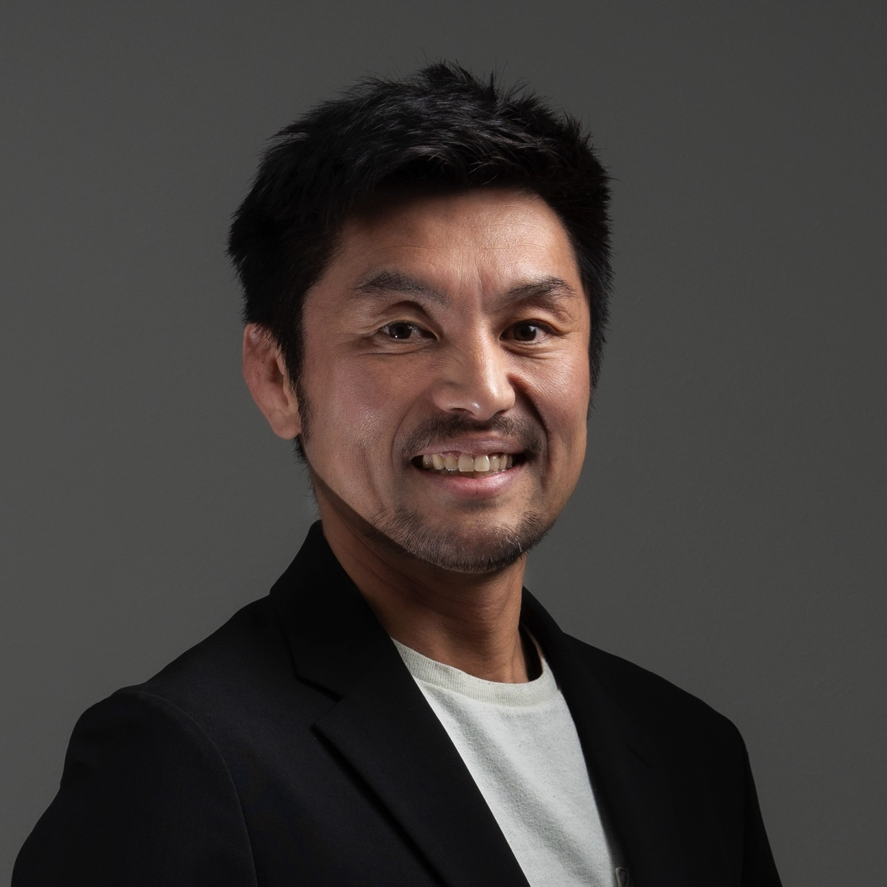
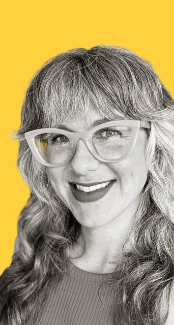

Agora Speaker Series
A seminar series hosted by the School of Liberal Arts at the University of Wollongong. Talks explore philosophy, literature, and more. All welcome.
Upcoming

Markus Pantsar
Towards an epistemology of artificial mathematical reasoning

Katsunori Miyahara
Artificial agency and the requirement of individuality

Kathryn Mackay
Pleonexia and public/private health systems
Julian Lamb
The take-ative: Romeo and Juliet and the infelicitous performative
Past events
UOW Expanding Minds Research Series – February Workshop
Shaun Gallagher — “Action with the Mesh Architecture”